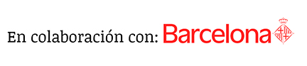
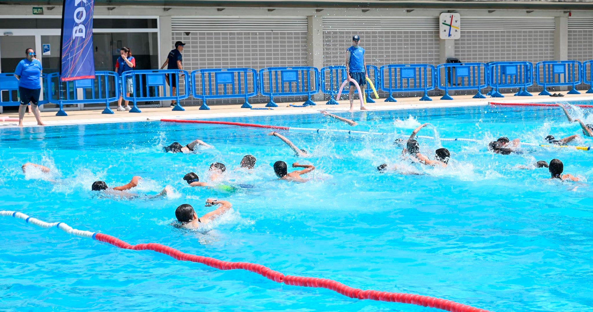
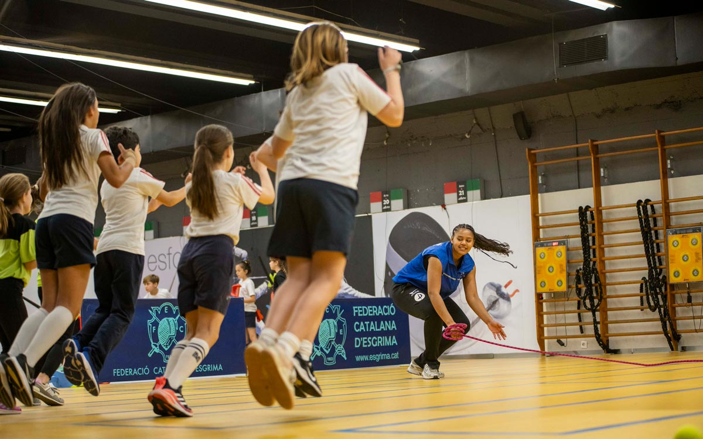
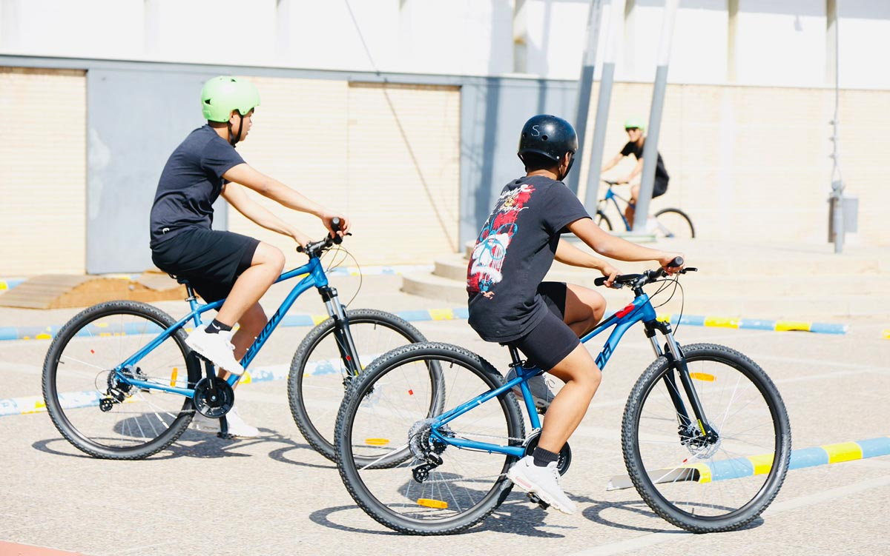

1
En enero de 2026, se abrió un periodo para que las familias realizaran su solicitud de ayudas para las campañas de extraescolares del curso y presentaran la documentación.


El Ayuntamiento de Barcelona garantiza una oferta deportiva extraescolar de calidad de la mano de 346 entidades homologadas
El nuevo curso escolar trae consigo la vuelta de las actividades extraescolares. Este año, el Ayuntamiento de Barcelona, a través del Institut Barcelona Esports (IBE), aumentará a 4,9 millones de euros las subvenciones para fomentar la práctica deportiva fuera del horario lectivo. El objetivo es promover hábitos saludables desde la infancia y asegurar una oferta accesible, inclusiva y de calidad.

Para el curso 2026-2027, el consistorio destinará
0 € más
a becas para la práctica deportiva extraescolar respecto al curso anterior. Unas ayudas que están destinadas a familias con menores de entre 6 y 17 años e ingresos limitados, y que contemplan también la posibilidad de acceder a monitores de apoyo para favorecer un deporte inclusivo.
Este curso, la oferta deportiva extraescolar de Barcelona se realizará gracias al compromiso de
0 entidades homologadas
21 de ellas nuevas, que cubren más de
0 modalidades deportivas
Una oferta deportiva de calidad y variada para la infancia y la adolescencia de la ciudad.

A partir de este curso, el procedimiento para solicitar las subvenciones para las actividades extraescolares (deportivas, culturales o científicas), así como para las actividades de la campaña de vacaciones de verano, se realiza de forma unificada y en dos fases.
En enero de 2026, se abrió un periodo para que las familias realizaran su solicitud de ayudas para las campañas de extraescolares del curso y presentaran la documentación.
Para la campaña de extraescolares 2026-27, las familias solo tendrán que indicar qué actividad concreta quieren realizar entre el 15 de septiembre y el 8 de octubre a través de:
indicando el código de la actividad deseada.